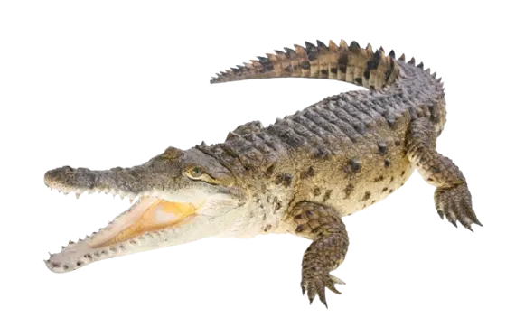

Animal Grimoire
 Crocodiles
Crocodiles
Overview
The crocodile occupies a borderland in magickal symbolism, moving between water and land, friend and foe.
Egyptian Magick: Friend and Foe
Moving between water and land, crocodiles occupied a similar borderland to hippopotami. They could be friend or foe.
In tomb paintings showing vulnerable cattle crossing a canal, crocodiles lurk threateningly below the water line.
The Water Spell and Magickal Hand Gesture
A magician would make a specific hand gesture (two fingers pointing out, two folded into the palm) while reciting a water spell to render the crocodile blind and protect against "marsh-dwellers."
Sobek and Sacred Crocodiles
Turn that murderous power to your own ends through magick, and crocodiles became useful. The crocodile god Sobek was widely worshipped, especially in the Fayum. Priests raised crocodiles in temple quarters, and young mummified crocodiles served as sacred offerings.
Crocodile Hybrids in Egyptian Myth
Several important Egyptian deities incorporated crocodile features:
Ammut ("devourer of the dead") had the head of a crocodile, mane and foreparts of a lion, and rump of a hippopotamus. She waited near the balance scales during judgment of the dead.
Taweret ("the Great One") had a hippopotamus body with wildcat paws and a crocodile tail. She stood upright with nursing breasts, protecting expectant mothers and young children. She carries the sa-hieroglyph of protection before her.
Ipet, identified with the constellation Ursa Major, had an entire crocodile forming her backbone. Through her mighty body, the creator-gods could be reborn as they traveled through the starry night.
Feared and Revered
Wherever the crocodile appears in the world it carries a rich web of meanings. The creature that is feared is also revered, since honoring it is a way of appeasing its collective spirit.
Crocodilopolis and the Weighing of Souls
The Egyptians honored the crocodile with its own city, Crocodilopolis, where sacred tamed crocodiles lived treated like kings and decked in gold and jewels. They deified the creature as Sobek, a god with the body of a man and the head of a crocodile. Sobek watched closely over the weighing of the souls after death, waiting for those who could not account for their actions so that he could devour them.
Lightning and the Waters
Because the crocodile can lie still for so long before striking with sudden speed, some peoples, including the Chinese and the Cambodians, made it a symbol of lightning. In Cambodia the deity who governs the earth and the waters shares the crocodile's name, Nak.
Creature of Creation
In many myths the crocodile is one of the sacred creatures that helped form the world. Equally at home in water and on land, it belongs to the moment when the earth was born from the sea, an idea echoed in creation stories across many cultures.
The Devourer and Rebirth
As the devourer, the crocodile is bound up with birth, which cannot come without death.
⚠️ The rite described here is a closed practice, sacred to its West African originating culture, and recorded only for understanding. In a Liberian rite of passage, before the ritual circumcision that marks entry into manhood, boys are sent into the forest to fend for themselves, sometimes for as long as four years. During this time the boy is said to have died and been swallowed by Poro, the spirit of the Great Crocodile, who after a period of gestation spits him back out into adulthood.
Crocodile Tears
The crocodile as dishonest trickster lives on in the idea of "crocodile tears," the hypocritical tears it is said to weep for the victims it devours.
The Ambivalent Guardian
Serious protection demands great power, and power strong enough to fend off real danger can be dangerous in its own right. Snakes and dragons carry this ambivalence, and the crocodile carries it even more strongly. There is a fantasy at the heart of these fierce protectors, much like a child wishing for a huge, frightening older sibling to scare off bullies: an ally so terrifying to everyone else that they become your loyal friend and helper. Remember, though, that an alliance with crocodile as a spirit animal does not extend to every living crocodile.
Hung From the Rafters
Churches and occultists alike once tried to command the crocodile's protective power by hanging stuffed, dried crocodiles from their ceilings. Working with crocodile imagery instead protects people and spares crocodiles. See Crocodile Guardian Image.